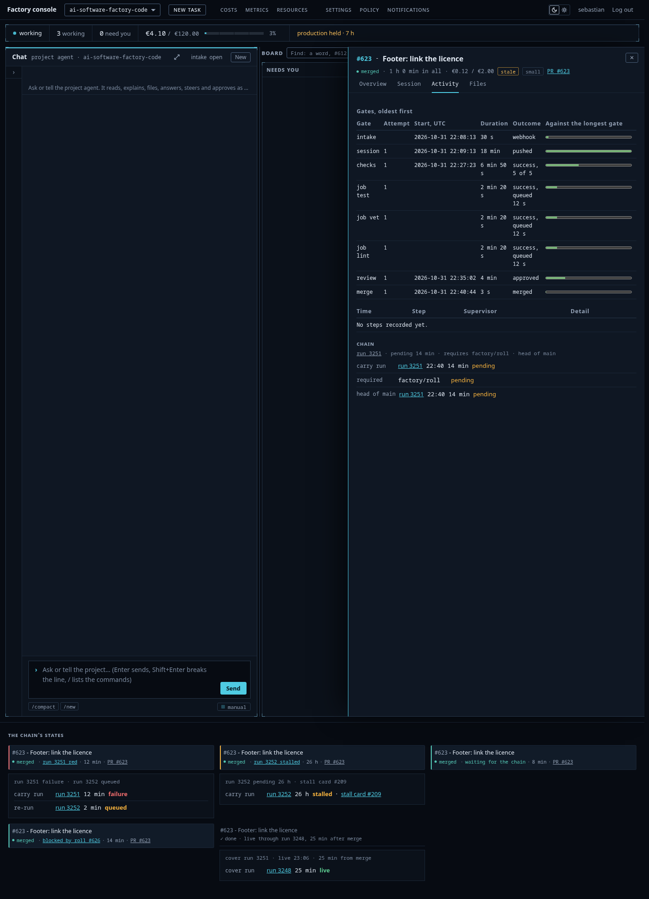
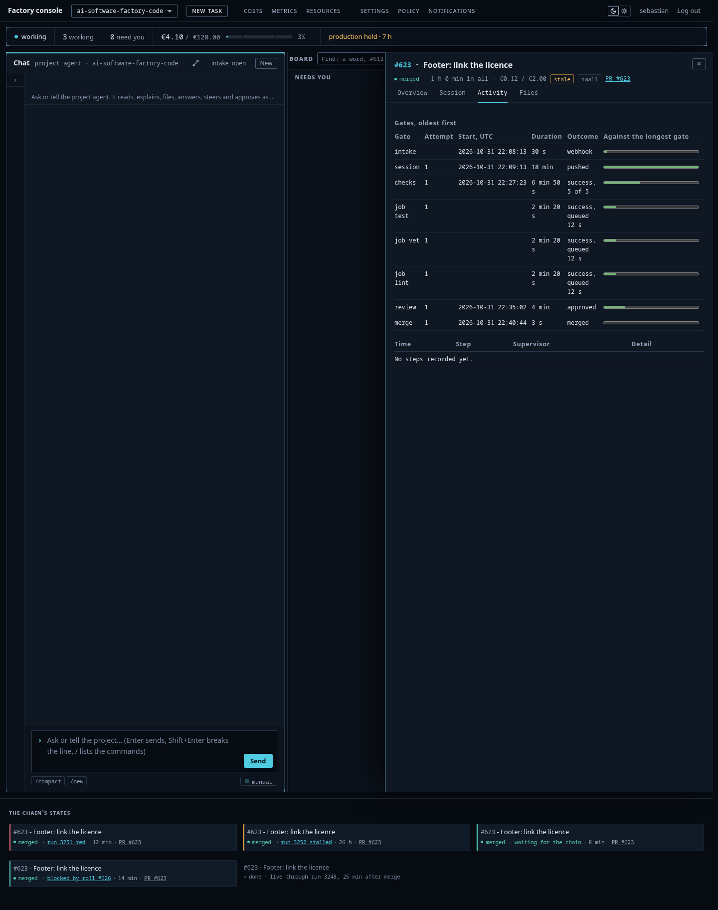
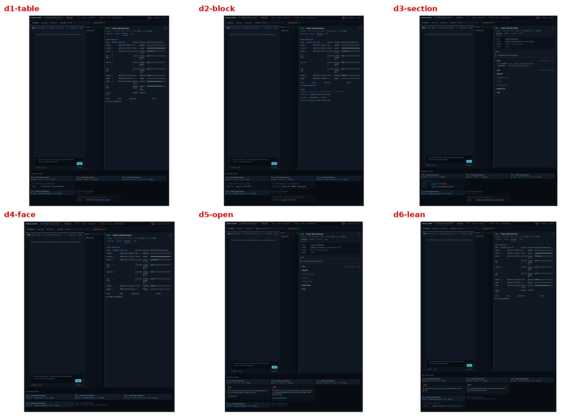

Round 15 — the chain's steps on the card
The pick request. A, the fusion (recommended): the face's stage word becomes the carry run and its link (chain run 3251, run 3251 red, run 3252 stalled); the Activity tab carries a Chain readout after the tables in the C24 grammar — carry run, required contexts, head of main, each with its clock and verdict, the stall card linked, the re-run named — collapsed to its summary when the chain is quiet, open when red or stalled; the done face reads "live through run 3248, 25 min after merge". Or B, d4-face: only the face changes, the drawer stays as today, and every question past "which run" leaves the console for the forge.
Try the two finalists
Both are live pages, not pictures. Open each, then open a card, read the face's second line, scroll the drawer's Activity tab, and switch the theme top right. Below the board every page carries the states band: the same merged card drawn in each chain state — chain red, stalled, waiting for the chain, blocked by roll, done — each with the tail this direction gives it.
A — the fusion (try it). The face links the run. The Activity tab answers "what must go green": carry run, factory/roll, head of main. On red the block names the failure and the queued re-run; on stall it links the stall card; the done face carries the cover.

B — d4-face (try it). Only the face's stage word changes, into the run and its link. The drawer is exactly today's: gates table, steps, nothing about the chain.

The six directions
- d1-table — the chain as the gates table's tail: one row that meters the wait like any gate, its runs and required contexts nested under it as the jobs nest under checks. prototype · light
- d2-block — a Chain readout block of its own after the tables: the C24 grammar, one row per fact, every run linked. prototype · light
- d3-section — a Chain section beside Time in the Overview, the Status line naming the run. prototype · light
- d4-face — the face carries the run: the stage word becomes the run and its link, the drawer stays as it is. prototype · light
- d5-open — the normal wait stays as today; the exceptions speak in the Overview's Open block, and done closes the story. prototype · light
- d6-lean — the lean hybrid: one row in the gates table, one clause in the Status line, an Open item only when red or stalled, the done face carries the cover. prototype · light
Every candidate is a static page in the production console.css over the real harvested board and drawer markup, shot at 1440 and 390 in both themes. The style never moves; only the placement and wording of the chain does.
The breadth sheet

Critics, breadth pass
| rank | glm | qwen |
|---|---|---|
| 1 | d4-face | d4-face |
| 2 | d2-block | d2-block |
| 3 | d6-lean | d3-section |
| 4 | d5-open | d1-table |
| 5 | d1-table | d6-lean |
| 6 | d3-section | d5-open |
Both crown d4 on the same argument — the blocking condition belongs in the card's headline, answered in one glance — and both put d2 second for giving the chain its own instrument without polluting the gates table. glm would drop d1 outright: putting the chain inside the gates table "teaches every user that the CI chain is a quality gate of the task", the exact misconception the brief warns against. qwen would drop d5: the normal wait is not an exception, so Open is the wrong mouth. qwen ranked from the contact sheet plus two full-size shots (its API caps at three images), so its lower half carries the sheet-scale discount.
Director's pixel pass and overrules
The candidates were also measured in the browser, and one real defect was found and fixed before any critic ran: the states band's first build named its cells .cell and .cards, names console.css already owns (the top strip's flex, nowrap cell and a lane's list). The inherited white-space: nowrap clipped the band's tails on 8 of 12 pages. Renamed to .scell/.scells; after the rebuild, measured on every page at 1440 and 390: no element overflows its box, the drawer sits inside the viewport, the gates table is exactly 621 px — the drawer's content width, flush by design. The vision pass that first claimed "text clipped at right edge" was right; its sibling claim "meter bars clipped" is the same 621 px flush fit and is overruled.
From the critics' passes, measured against the code:
- glm's light pass: "the done state approaches the 4.5:1 floor and may disappear". Measured:
#5b6678on#fffdf8is 5.71:1, and every state colour clears the floor on the light card (st-merged 5.70, st-failed 5.86, st-waiting 6.46, st-done 5.67). Overruled on the numbers. - qwen's "d4 uses the word face too broadly": it read the direction's label, not the design. Overruled.
- qwen's sheet-scale reads (d6's "text blending at the bottom", d5's "crammed wall") do not survive the full-size shots: the band cells are legible and unclipped at 1440, and glm's full-size pass names no unreadable text anywhere. Discounted as sheet scale.
Compare loop
Candidate A, the fusion: d4's face carries the run, d2's block carries the facts, the done face carries the cover. Candidate B, d4-face alone. Both critics pick A.
| critic | verdict | the one change asked |
|---|---|---|
| glm | A | subordinate the block to the gates table (opacity, smaller type, or a bar above it) |
| qwen | A | pin the chain section above the gates table, collapsible |
glm: "the difference between 'stalled' and 'stalled · stall card #209' is the difference between alarm and resolution"; B's serenity "is bought at the price of ignorance". qwen: "mission control is visibility into dependencies; B turns a moment of decision into a forced navigation step to the forge".
Both one-change asks point at the same thing: the block's hierarchy against the gates table. The ruling takes the substance and refuses both mechanisms. The block keeps its place after the tables — the Activity tab reads oldest first, and the chain is the newest chapter of the card's story, so it reads last like every newest thing in the console; a block pinned above the table would fight the tab's grammar and shout during the hours-long quiet wait. It renders in the drawer's own section idiom instead: a details.sec with the small-capitals summary, the hint carrying the live fact (run 3251 pending · 14 min), collapsed when the chain is quiet, open when it is red or stalled. Hierarchy answered with the console's own grammar, no opacity hack — dimmed type would sink below the 4.5:1 floor the style pins.
Recommendation
A, the fusion. The brief asked four questions and A is the only candidate that answers all four: the wait has a block of its own on Activity (not a row in the task's gates), the face's stage word carries the run and its link, the exceptions speak with their actions (the stall card, the re-run), and done leaves the cover trace. Both critics' passes agree, and the compare loop turned their reason into words worth keeping: the face answers "where is my merge" in one glance, the block keeps "what must go green" inside the console. d4-face stays the recorded alternative: pick it to hold the build to one template line and leave the drawer untouched, knowing that every question past "which run" leaves the console for the forge.
The build inherits, recorded: the block in the details.sec idiom, open on exception, collapsed when quiet; the stall card and the re-run as links in the block's rows; the done face's cover clause; the face's run link in the stage word's own state colour. The store reads behind it: the carry run with its verdict and first-seen time, the required contexts of the project file, the head of main, the roll, the stall ladder, the cover run (table chain_runs, roadmap 297).
Cost
$0.15 critics (5 runs: glm dark, glm light, qwen breadth, glm compare, qwen compare) of the $1 cap; no image generation. Gemini sat the round out: the fal account is locked for top-up. Round time: one session, 2026-10-31 → 11-01.